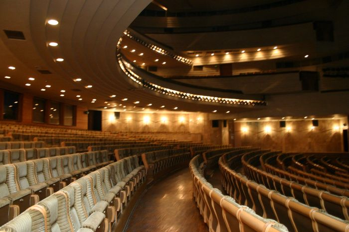

О ТЕАТРЕ
Харьковский академический театр оперы и балета - один из старейших отечественных музыкальных театров, наследник лучших традиций украинской, русской и мировой культур. История музыкального театра в Харькове ведет отсчет с 1780 года. Дальнейшая история этого жанра связана с рождением оперных антреприз, а также гастролями частных трупп, в том числе итальянских. Оперы и балетные дивертисменты давали в различных театральных помещениях, не всегда подходящих для этой цели. Началом относительной стабильности можно считать декабрь 1874 (по новому стилю январь 1875), когда благодаря усилиям мецената В.Пащенко во вновь отстроенном театре состоялся первый спектакль антрепризы Ф.Бергера. С 1891 года театр получил постоянную «прописку» в бывшем Коммерческом клубе, где работал с небольшим перерывом 100 лет (сейчас это помещение осваивает Харьковская филармония).
Конец ХIХ века стал периодом расцвета оперы в Харькове, когда на оперной сцене выступали Ф.Шаляпин и М.Баттистини, А.Нежданова и Л.Собинов, Н.Забела-Врубель и И.Алчевский, а также много других корифеев исполнительского искусства. Их творчество стало образцом для художников новой эпохи и органично воспринималось рядом со школой мастеров украинской сцены М.Кропивницкого, П.Саксаганского, М.Заньковецкой. Харьковский оперный благодаря этому художественному созвучию нашел неповторимую творческую личность. В октябре 1925 года в соответствии с правительственным постановлением в Харькове, тогда ещё столице Украины, был создан первый государственный национальный театр оперы и балета. Основой коллектива были представители харьковской музыкально-исполнительской школы, известные мастера из других городов, талантливые дебютанты. Существенно, что в 1920-е - 1930-е годы харьковская оперная и балетная сцены стали творческой колыбелью для таких будущих звезд национального искусства, как И.Козловский, М.Рейзен, Б.Гмыря, З.Гайдай, М.Гришко, И.Паторжинский, М.Литвиненко-Вольгемут, В.Дуленко, Р.Захаров. В те же годы харьковский оперный стал творческой лабораторией по созданию первых в национальном театре оперных и балетных спектаклей: «Пан Каневский» М.Вериковского, «Купало» А.Вахнянина, «Кармелюк» В.Костенко и многих других. В декабре 1944 года театру было присвоено имя Н.В.Лысенко. Этой акцией были отмечены заслуги коллектива в становлении национального музыкального искусства и увековечена память его основателя, чьи оперы «Рождественская ночь» (1883), «Утопленница» (1885), «Тарас Бульба» (1924) впервые были поставлены именно на харьковской сцене. В течение последних десятилетий лучшие исполнительские традиции корифеев сохраняли и приумножали такие выдающиеся исполнители, как Э.Червонюк, Л.Попова, Н.Манойло, Т.Попеску. А также Ст.Арканова, С.Колыванова, которые и сегодня передают молодому поколению свой творческий опыт. Среди известных исполнителей, рожденных харьковской сценой, и сейчас есть имена, украшающие оперные и балетные труппы Москвы, Киева, европейских городов - А.Востряков, Д.Попов, В.Верестников, М.Пастер, А.Дурсенева и другие. С октября 1991 года театр работает в новом помещении, технические возможности которого позволили в полной мере раскрыть творческий потенциал исполнителей, создать полноценные высокохудожественные спектакли, среди которых оперы "Тарас Бульба" Н.Лысенко и "Поэт" Л.Колодуба, "Турандот" Дж.Пуччини и музыкальная сказка для детей «Когда звери говорили» Н.Стецюна, «Борис Годунов» М.Мусоргского и «Кармен» Ж.Бизе, балеты «Спящая красавица» П.Чайковского, «Баядерка» Л.Минкуса, «Петрушка» и «Весна священная» И.Стравинского. Репертуарная афиша театра постоянно пополняется, и сейчас насчитывает около 60 опер и балетов. В «городе мастеров», как образно называют гигантское сооружение харьковского театра оперы и балета (площадь помещений на всех этажах около 7 гектаров), работает сейчас почти тысяча высококвалифицированных творческих профессионалов и технических сотрудников. Для всех спектаклей театра, а также по заявкам театров и творческих коллективов других городов и стран, художественно-вспомогательные службы театра изготавливают костюмы и декорации самостоятельно. Два театральных зала могут одновременно принимать 2000 зрителей. Зал для камерных концертов создан в помещении выставочной галереи «Маэстро», где регулярно проходят выставки разных жанров изобразительного искусства. ХНАТОБ, вероятно, единственный в нашей стране театр, где наряду с мастерами сцены свое признание раскрывают одаренные молодые исполнители, постоянно пополняя состав оперной и балетной труппы. На базе театра работают оперная студия Харьковского университета искусств им. И.Котляревского, хор мальчиков «Аз 'и Буки», отделение классического танца Харьковского училища культуры и учащихся театрального отделения художественного училища. Постоянными стали выступления отдельных мастеров и художественных коллективов ХНАТОБа во многих странах Западной Европы, Северной и Южной Америки, странах Азии. В эти нелегкие для искусства времена театр имеет потенциальную возможность оставаться главным центром культурной жизни Слобожанщины.